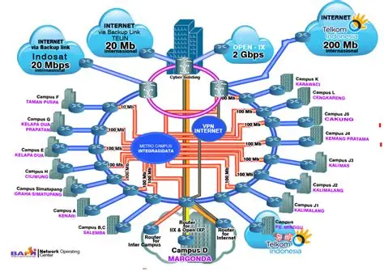

Deskripsi Diri
Saya adalah mahasiswa yang memiliki minat besar di bidang Teknologi Informasi, khususnya jaringan komputer, sistem keamanan, dan administrasi server. Saat ini saya aktif mempelajari konfigurasi perangkat jaringan seperti MikroTik dan FortiGate, manajemen server Linux, VPN, routing, serta dasar-dasar keamanan siber untuk meningkatkan kemampuan teknis di dunia infrastruktur IT.
Tujuan saya adalah mengembangkan karier sebagai Teknisi Jaringan, Network Engineer, atau System Administrator dengan terus meningkatkan kompetensi melalui praktik langsung, sertifikasi, dan proyek-proyek yang relevan. Saya percaya bahwa konsistensi dalam belajar, dokumentasi yang baik, kemampuan problem solving, dan kemauan untuk terus berkembang merupakan kunci untuk mencapai profesionalisme di bidang teknologi informasi.
Data Pribadi
| Keterangan | Informasi |
|---|---|
| Nama | Ahmad Pratama Johari |
| Minat Karier | Teknisi Jaringan |
| Lokasi | Indonesia |
| ahmaddpratamajohari@gmail.com |
Riwayat Pendidikan
| Tahun | Pendidikan |
|---|---|
| 2022 - 205 | SMK Islam Malahayati - Teknik Komputer dan Jaringan |
Target Belajar
- Mendalami administrasi jaringan.
- Meningkatkan kemampuan konfigurasi MikroTik dan FortiGate.
- Mempelajari keamanan jaringan dan VPN.
- Mengambil sertifikasi jaringan.
Minat dan Keahlian
Network Engineering
Mempelajari konfigurasi jaringan, routing, switching, VPN, dan troubleshooting menggunakan MikroTik dan FortiGate.
Server Administration
Mengelola server Linux, monitoring sistem, dan konfigurasi layanan jaringan.

Cyber Security
Mempelajari keamanan jaringan, firewall, VPN, dan perlindungan infrastruktur IT.
Kontak Saya
Terbuka untuk belajar, berdiskusi, dan mengembangkan kemampuan di bidang jaringan komputer.